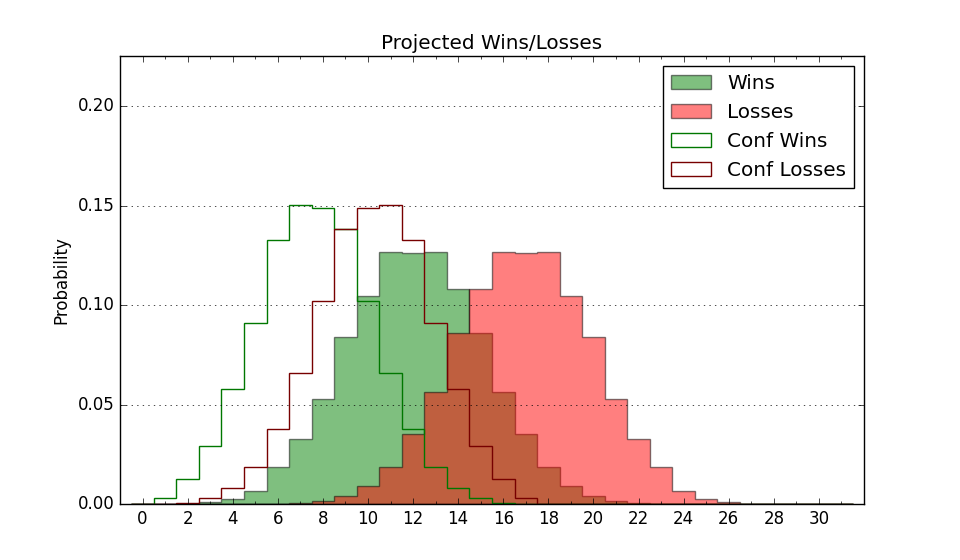

| Home | Game Probabilities | Conferences | Preseason Predictions | Odds Charts | NCAA Tournament |
| City: | Buies Creek, North Carolina | |
| Conference: | Colonial (2nd)
| |
| Record: | 0-0 (Conf) 2-4 (Overall) | |
| Ratings: | Comp.: -8.7 (257th) Net: -6.8 (236th) Off: 98.0 (258th) Def: 104.8 (193rd) SoR: 0.1 (218th) |
| Remaining | ||||||
|---|---|---|---|---|---|---|
| Date | Opponent | Win Prob | Pred. | |||
| 12/4 | Coastal Carolina (273) | 68.7% | W 68-63 | |||
| 12/12 | @ The Citadel (319) | 49.9% | L 66-67 | |||
| 12/15 | @ Morgan St. (351) | 63.9% | W 75-71 | |||
| 12/18 | Longwood (217) | 57.6% | W 69-67 | |||
| 12/29 | @ North Carolina (14) | 1.7% | L 63-92 | |||
| 1/2 | Drexel (211) | 55.9% | W 69-67 | |||
| 1/4 | @ UNC Wilmington (128) | 16.0% | L 64-75 | |||
| 1/9 | @ Hampton (281) | 40.8% | L 66-68 | |||
| 1/11 | @ Elon (165) | 20.2% | L 64-73 | |||
| 1/16 | College of Charleston (174) | 47.7% | L 72-73 | |||
| 1/18 | Monmouth (295) | 72.7% | W 75-69 | |||
| 1/23 | @ Stony Brook (326) | 51.6% | W 71-70 | |||
| 1/25 | @ Hofstra (195) | 24.4% | L 63-71 | |||
| 1/30 | William & Mary (254) | 64.2% | W 78-74 | |||
| 2/1 | Hofstra (195) | 52.4% | W 67-66 | |||
| 2/6 | Elon (165) | 46.3% | L 68-69 | |||
| 2/8 | North Carolina A&T (308) | 75.2% | W 80-72 | |||
| 2/13 | @ Northeastern (142) | 17.3% | L 64-74 | |||
| 2/15 | @ Delaware (201) | 25.9% | L 70-78 | |||
| 2/20 | @ North Carolina A&T (308) | 47.1% | L 75-76 | |||
| 2/22 | Towson (154) | 44.2% | L 63-64 | |||
| 2/27 | UNC Wilmington (128) | 39.4% | L 68-71 | |||
| 3/1 | @ College of Charleston (174) | 21.1% | L 68-77 | |||
| Previous | Game Score | |||||
| Date | Opponent | Win Prob | Result | Off | Def | Net |
| 11/6 | @Virginia (104) | 11.4% | L 56-65 | 9.4 | -8.0 | 1.5 |
| 11/10 | St. Francis PA (291) | 71.9% | L 64-65 | -16.7 | 1.2 | -15.5 |
| 11/17 | @Navy (315) | 49.3% | W 86-66 | 17.8 | 13.7 | 31.5 |
| 11/22 | @Ohio St. (12) | 1.6% | L 60-104 | -0.3 | -19.2 | -19.5 |
| 11/24 | @Evansville (231) | 30.4% | L 53-66 | -18.6 | 3.2 | -15.4 |
| 11/30 | @Green Bay (230) | 30.4% | W 72-66 | -3.1 | 18.2 | 15.1 |
| Stats & Trends | |||||
|---|---|---|---|---|---|
| Current | Day | Week | Month | Season | |
| Composite | -8.7 | +0.6 | +3.7 | +1.9 | +1.9 |
| Comp Rank | 257 | +1 | +36 | +19 | +19 |
| Net Efficiency | -6.8 | +1.2 | +8.3 | -- | -- |
| Net Rank | 236 | +7 | +67 | -- | -- |
| Off Efficiency | 98.0 | +0.8 | +1.4 | -- | -- |
| Off Rank | 258 | +23 | +23 | -- | -- |
| Def Efficiency | 104.8 | +0.4 | +6.9 | -- | -- |
| Def Rank | 193 | -2 | +97 | -- | -- |
| SoS Rank | 121 | +19 | +39 | -- | -- |
| Exp. Wins | 12.1 | +0.2 | +2.4 | +0.3 | +0.3 |
| Exp. Conf Wins | 7.7 | +0.1 | +1.3 | +0.1 | +0.1 |
| Conf Champ Prob | 1.8 | -0.2 | +1.1 | -0.1 | -0.1 |

| Advanced Stats | ||
|---|---|---|
| Stat | Value | Rank |
| Off Eff FG % | 0.486 | 221 |
| Off Ast Ratio | 0.137 | 210 |
| Off ORB% | 0.169 | 354 |
| Off TO Rate | 0.164 | 263 |
| Off FT Ratio | 0.307 | 242 |
| Def Eff FG % | 0.538 | 279 |
| Def Ast Ratio | 0.151 | 230 |
| Def ORB% | 0.249 | 87 |
| Def TO Rate | 0.158 | 125 |
| Def FT Ratio | 0.393 | 279 |